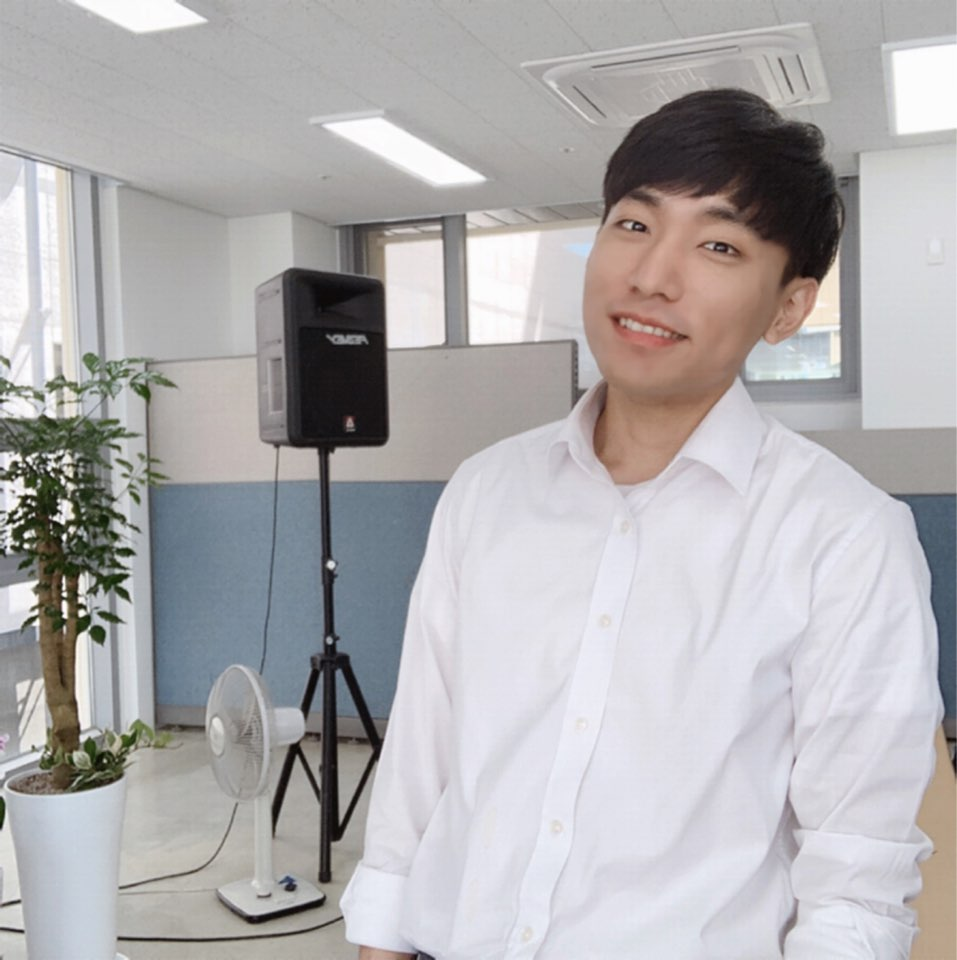

Hi. I'm Seongil Wi.
Philippians 4:13 - I can do everything through him who gives me strength.
Hi, I am a Ph.D student, and a member of WSP Lab in KAIST.
Learn about what I doPhilippians 4:13 - I can do everything through him who gives me strength.
Hi, I am a Ph.D student, and a member of WSP Lab in KAIST.
Learn about what I do